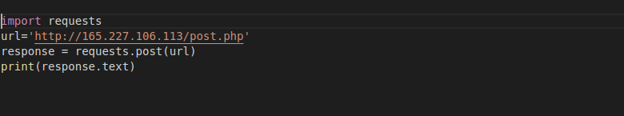
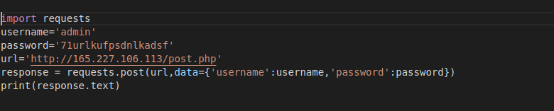

As the question gives us a link and give us a hint about some post request so
we should try sending post request to this link. In this case I am using python. So first we make a simple post request to this address.

Response send that you have to make post request and it also gives username and password in comments.We try using auth variable but didn't get lucky it respond same thing
requests.post(url, auth=('username','71urlkufpsdnlkadsf')
Now may be it is using different type of authetication so after trying different things we get lucky with data as sending username and password as payload with request.

And voila you get your flag.